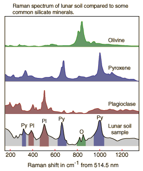

Raman Scattering from Minerals
Raman scattering can be used as a tool for the identification of minerals. Since the Raman spectra for different mineral tend to have sharp peaks which form a fairly unique pattern, they can serve as "fingerprints" for minerals. Since the Raman spectra can be collected remotely, they show great promise for planetary exploration.
|

| The illustration at left shows qualitative sketches of Raman spectra displayed by the Department of Earth and Planetary Sciences, Washington University in St. Louis (http://epsc.wustl.edu/haskin-group/Raman/overview.htm). This research group is developing Raman spectrometers for in situ analysis of minerals on planetary surfaces. The spectra are attributed to Wang et al., J. Geophys. Res. 100, p21189-21199 (1995). Spectra of the common silicate minerals olivine, pyroxene, and plagioclase are compared to a Raman spectrum of a lunar soil sample identified as 71501.
|
|
Index
Scattering concepts
Atmospheric optics concepts
Molecular spectra concepts |